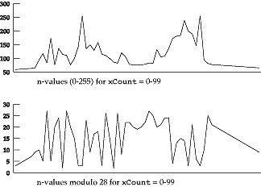

Once the parameters that define the set have been selected there are still many decisions to be made to determine the character of the sonic map. With the simple mapping discussed so far there are
- the set of pitches to which the numeric output will be mapped
- the length of time to be associated with each point processed
In the process as illustrated the maximum interation count n through the inner loop is 255. This means that for any given output value
0 <= n <= 255
In the sample Csound score above we selected a four octave C Major scale as the pitch range. This means that the n values (0-255) were mapped into one of 28 possible pitches. An effective operation for accomplishing this is a simple modulo operation. With the four octave scale indexed as an array of pitches with the C2 (middle C = C4) as element 0 and B5 as element 27, n mod 28 maps each ouput value into one of the pitches from the defined pitch range. See Figure 3.
 Figure 3: Ouput values through one scanline of points across the Mandelbrot set. The top graph shows the actual iteration count for each point, the bottom shows the iteration count after performing a mod28 on each number to fit the value within the pitch range of a 4-octave C Major scale (28 notes). The modulo operation "amplifies" the areas of high differetiation while the stable areas remain linear in nature.
Each point in the process is an event in the sonic map and needs to be assigned a length. An event sample rate can be established with each event equal to one period of the rate (the variable TimeIncrement in the program). In the sample score each point is set to occur .2 seconds after the previous one. The process is also setup to cause repeated values to be tied by testing each point's final interation count (n value) with the final n value for the previous point. This gives the sonic map a rhythmic character that reflects the rate of change of the process.
To illustrate the compostional control available through pitch ranges and event lengths four different one minute mappings are defined below. Each score has four voices calculated. The basic parameters defining the set are the same as in the previous example with the xMid and WindowSize values kept the same for each voice.
Score 1 reflects a high degree of pitch and time complexity with the scale source of a quarter-tone scale (24 pitches per octave, or 96 pitches over 4 octaves) and the voices being in a dense event rate (a high number of events per second) in the rhythmic relationship of 5:6:7:8. Score 2 reduces the scale to the more traditional equal tempered chromatic scale with the event rates slowed down. The pitch range is further simplifed to a G-Major diatonic scale in Score 3 with the event rates of the voices set up in rhythmic relationship of 240 to 360 or 2:3. Score 4 simplifies the mapping to the extreme using a 6-note scale on G, built on a Pythagorean tuning and with each voice moving at the same event rate.
Pitch tables (using GEN 2) and unique paramters for the four scores are as follows
Score 1:
YMid xResolution Pitch Range Event Length
1 .42073 500 quarter-tone .12
2 .42057 600 quarter-tone .1
3 .42023 700 quarter-tone .0857
4 .42007 800 quarter-tone .075
This table defines a 4-octave quartertone scale (96 notes) starting on G2.
f1 0 128 -2
6.070 6.075 6.080 6.085 6.090 6.095 6.100 6.105 6.110 6.115
7.000 7.005 7.010 7.015 7.020 7.025 7.030 7.035 7.040 7.045 7.050 7.055
7.060 7.065 7.070 7.075 7.080 7.085 7.090 7.095 7.100 7.105 7.110 7.115
8.000 8.005 8.010 8.015 8.020 8.025 8.030 8.035 8.040 8.045 8.050 8.055
8.060 8.065 8.070 8.075 8.080 8.085 8.090 8.095 8.100 8.105 8.110 8.115
9.000 9.005 9.010 9.015 9.020 9.025 9.030 9.035 9.040 9.045 9.050 9.055
9.060 9.065 9.070 9.075 9.080 9.085 9.090 9.095 9.100 9.105 9.110 9.115
10.000 10.005 10.010 10.015 10.020 10.025 10.030 10.035
10.040 10.045 10.050 10.055 10.060 10.065
Score 2:
YMid xResolution Pitch Range Event Length
1 .42073 240 chromatic .250
2 .42057 300 chromatic .2
3 .42023 360 chromatic .166
4 .42007 420 chromatic .1428
This table defines a 4-octave chromatic scale (48 notes) starting on G2.
f1 0 64 -2
6.07 6.08 6.09 6.10 6.11
7.00 7.01 7.02 7.03 7.04 7.05 7.06 7.07 7.08 7.09 7.10 7.11
8.00 8.01 8.02 8.03 8.04 8.05 8.06 8.07 8.08 8.09 8.10 8.11
9.00 9.01 9.02 9.03 9.04 9.05 9.06 9.07 9.08 9.09 9.10 9.11
10.00 10.01 10.02 10.03 10.04 10.05 10.06
Score 3:
YMid xResolution Pitch Range Event Length
1 .42073 240 diatonic .125
2 .42057 360 diatonic .167
3 .42023 240 diatonic .125
4 .42007 360 diatonic .167
This table defines a 4-octave G Major scale (28 notes) starting on G2.
f1 0 32 -2
6.07 6.09 6.11 7.00 7.02 7.04 7.06
7.07 7.09 7.11 8.00 8.02 8.04 8.06
8.07 8.09 8.11 9.00 9.02 9.04 9.06
10.07 10.09 10.11 11.00 11.02 11.04 11.06
Score 4:
YMid xResolution Pitch Range Event Length
1 .42073 480 hexatonic .125
2 .42057 480 hexatonic .125
3 .42023 480 hexatonic .125
4 .42007 480 hexatonic .125
This table defines a 4-octave hexatonic scale starting on G2 (24 notes). The tuning for the scale is Pythagorean based on the ratios 1:1, 9:8, 81:64, 3:2, 27:16, 243:128. Actual frequencies in Hz were put into the table and placed directly in the orchestra
with the cpspch function.
f1 0 32 -2
98.0 110.75 124.03 147.0 165.38 186.05
196.0 220.5 248.06 294.0 330.75 372.1
392.0 441.0 496.13 588.0 661.50 744.19
784.0 882.0 992.25 1176.0 1323.0 1488.38
|